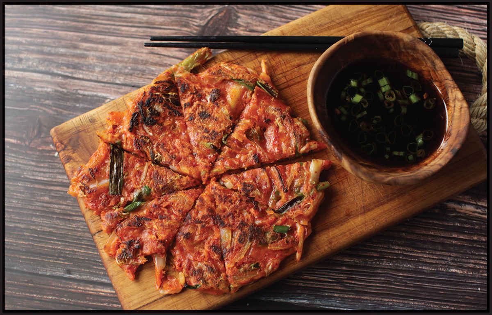

KIMCHI OR SAUERKRAUT BUCHIMGAE (KOREAN-STYLE PANCAKES)
|
Yield Serves 4 |
Active Time 15 minutes Total Time 30 minutes |
If you don’t have enough kimchi juice, make up the difference in more cold water. Gochugaru are Korean chile flakes. They are not very spicy, but you can adjust the heat level of these pancakes by adding more or less or by adding a hotter chile flake or ground chile. These pancakes can be served at room temperature, but you can also keep them warm on a rack set in a rimmed baking sheet in a 200°F (90°C) oven as you cook successive batches until ready to serve. Or better yet, gather in the kitchen and eat them as they come out of the pan.
INGREDIENTS
6 ounces (170 g/about 1 cup) kimchi, thinly sliced, plus ¼ cup (60 ml) kimchi juice (see Notes)
2 ounces (60 g/about ¼ medium) onion, thinly sliced
2 scallions, split lengthwise and cut into 1½-inch pieces
4 ounces (120 g/about ¾ cup) all-purpose flour
1 ounce (30 g/about ¼ cup) cornstarch or potato starch
2 teaspoons (8 g) sugar
1 teaspoon (3 g) gochugaru, more or less to taste (see Notes)
6 ounces (180 ml/about ¾ cup) cold water
Peanut, rice bran, or other neutral oil, as needed for panfrying
Pancake Dipping Sauce (here)

These pancakes work best with extra-old kimchi that is quite acidic. For a delicious variation, replace some or all of the kimchi with sauerkraut.
DIRECTIONS
1 Combine the kimchi, kimchi juice, onion, scallions, flour, starch, sugar, gochugaru, and water in a large mixing bowl. Stir rapidly with a spoon just until no dry flour remains (do not overmix the batter). The batter should be thin enough to flow around when you tilt the bowl.
2 Heat 2 tablespoons (30 ml) oil in the bottom of a flat-bottomed wok or an 8- to 10-inch nonstick skillet over medium-high heat until shimmering. Add just enough batter that you can spread it into a thin pancake with the back of a spoon (you should be able to make about two 10-inch pancakes, three 8-inch pancakes, or several smaller pancakes). Let the pancake cook without moving until the bottom of the pancake is set, about 2 minutes. Use a thin metal spatula to gently release the pancake from the pan if it is sticking at all.
3 Continue to cook, swirling the pancake around to encourage even browning until the first side is well browned with a few darker spots, about 5 minutes total. Use a wide spatula to carefully flip the pancake. Continue cooking until the second side is well browned, about 4 minutes longer.
4 Slide the pancake out onto a cutting board. Repeat steps 2 through 4 for the remaining pancake batter. Cut into wedges with a pizza slicer or knife and serve with the dipping sauce.